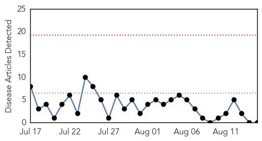
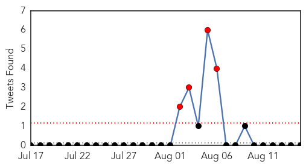
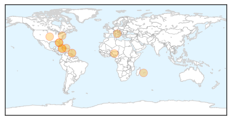
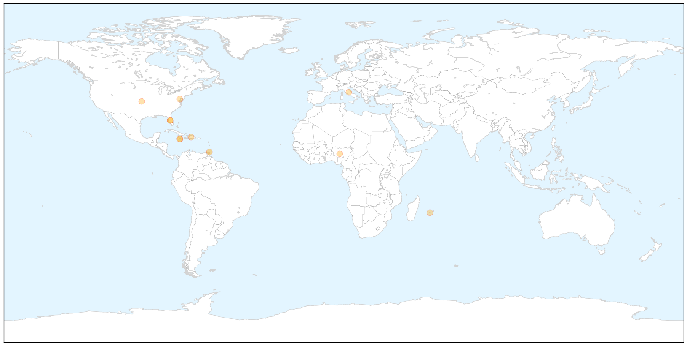
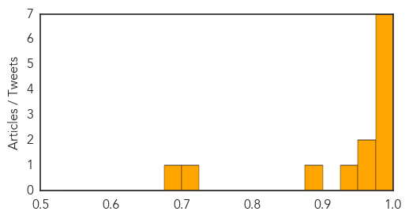

Dengue Fever
30-Day Web Trend
0 alerts, 0 warnings

30-Day Twitter Trend
4 alerts, 0 warnings

Article Locations


Article Confidences

Top Articles:
-
No articles found for Aug 15, 2014
Top Tweets:
-
No tweets found for Aug 15, 2014
Chikungunya
30-Day Web Trend
1 alerts, 0 warnings

30-Day Twitter Trend
0 alerts, 0 warnings

Article Locations

X

Article Confidences
Top Articles:
- 0.997
- Vaccine for chikungunya infection shows promise in first test
- 0.994
- Chikungunya test vaccine shows promise: makers
- 0.993
- US assesses virus of the Caribbean
- 0.992
- Smart Woman: Chikungunya Vaccine - Story
- 0.984
- CMO: Chikungunya Could Be Around For The Next 12 Months:: The St. Kitts-Nevis Observer
- 0.984
- 4 New Locally Transmitted Chikungunya Cases Confirmed in Jamaica
- 0.978
- Chikungunya Virus Cases Rise In Our Area; As Health Officials Are Testing A New Vaccine To Prevent The Illness « CBS Philly
- 0.963
- Scientists develop new Chikungunya vaccine
- 0.954
- New vaccine against chikungunya gives promising results
- 0.939
- Officials warn: Remove standing water to avoid Chikungunya outbreak
- 0.883
- Chikungunya cases in Jamaica now at 10
- 0.712
- As many as 80 infected with Chikungunya -- TT health minister
- 0.675
- Fuad: As many as 80 infected with Chikungunya
Top Tweets:
-
No tweets found for Aug 15, 2014